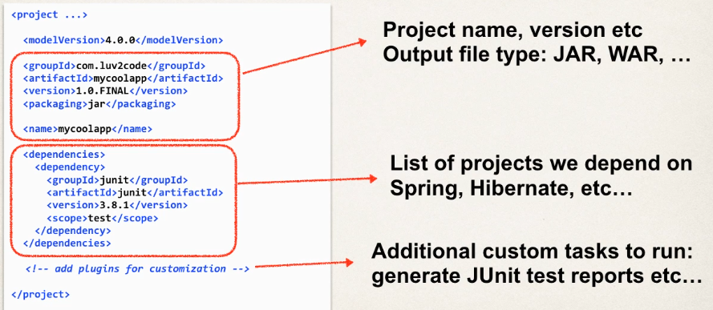
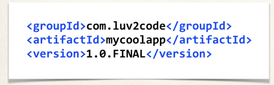

The POM File has the following structure:
- Project metadata: information about the project
- Dependencies: list of dependencies for the project
- Plug-ins: additional custom tasks to run (JUnit tests, reports, etc)

Project coordinates uniquely identify a project:

Where:
- Group ID: name of company, group or organization
- Artifact ID: name for the project
- Version: a specific release version
To add a given dependency project, we need:
- Group ID
- Artifact ID
- Optional: version (best practice to include the version)